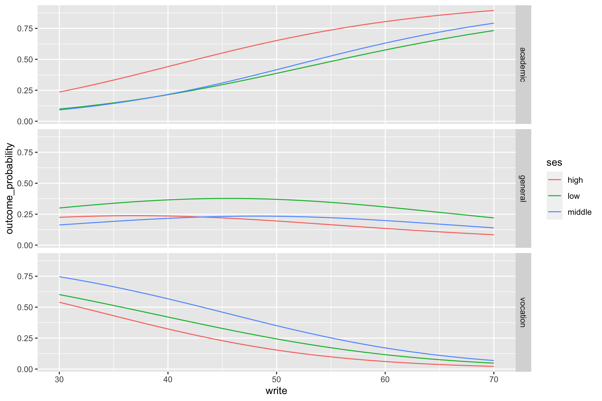
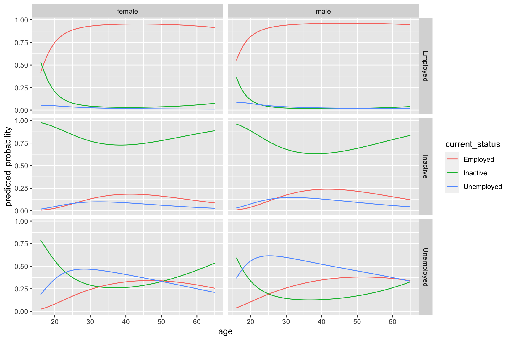
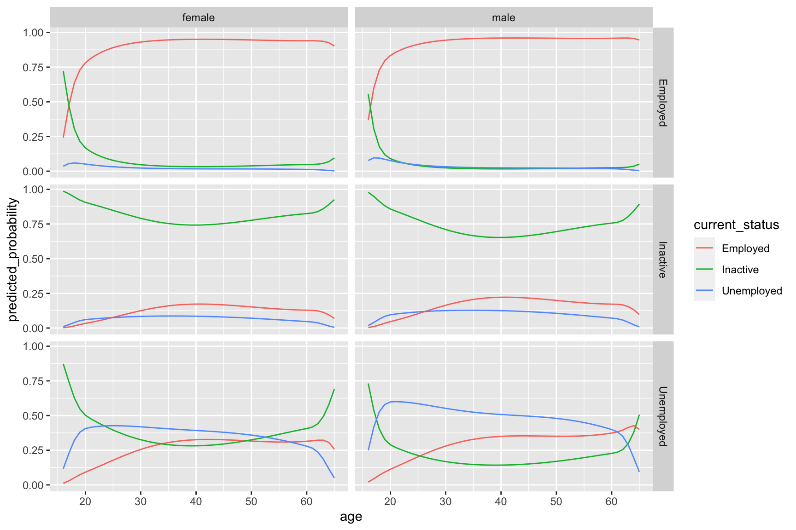
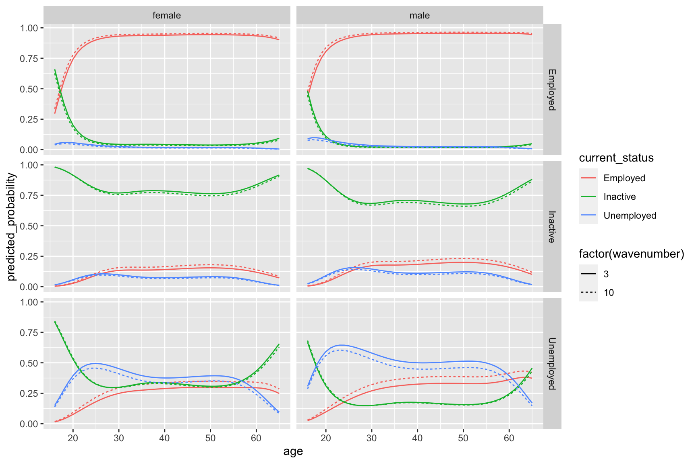
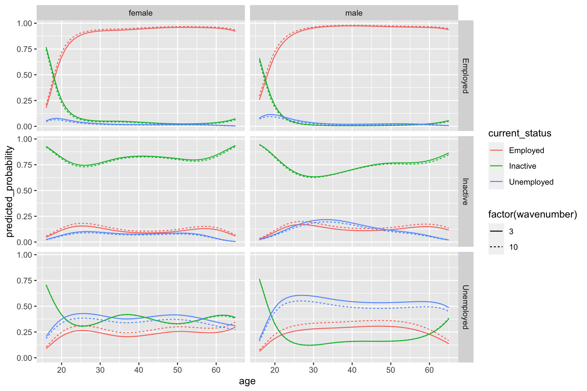

Code
library(tidyverse)The aim of this notebook is to use multinomial logistic regression for estimating transition probabilities between different economic activity and inactivity states using the UKHLS.
The previous notebook suggests that transition probabilities appear broadly invariant at three level groupings, so perhaps we can start by assuming that all data on transitions can be used. We can then refine the approach further by including both additional predictors and additional economic inactivity categories.
Let’s start by seeing if I can follow a tutorial or two on the approach.
This guide looks fairly good though makes use of older pre-tidyverse packages.
This guide appears quite similar though uses the caret package for performing a training/test data split.
This guide appears very similar to the first two, using nnet::multinom and proceeding in roughly the same order.
This guide is from an online book on advanced regression techniques and goes into more detail about the theory/derivations etc.
For all guides the package and function used appears to be nnet::multinom
Let’s pick the guide with the simplest dataset and make sure I can get the same results by following the same process.
I think I’ll just pick the first one…
library(tidyverse)ml <- haven::read_dta("https://stats.idre.ucla.edu/stat/data/hsbdemo.dta")I’ve used haven::read_dta rather than the foreign::read.dta function. This means I probably need to use the haven::as_factor variable with levels = 'labels' too to convert the variables of interest into easily readable formats.
The particular variables of interest in the above guide are ses and prog
ml_sesProg <-
ml %>%
select(ses, prog, write) %>%
mutate(
ses = haven::as_factor(ses),
prog = haven::as_factor(prog)
)Tidyverse way of getting frequency table:
ml_sesProg %>%
group_by(ses, prog) %>%
count()# A tibble: 9 × 3
# Groups: ses, prog [9]
ses prog n
<fct> <fct> <int>
1 low general 16
2 low academic 19
3 low vocation 12
4 middle general 20
5 middle academic 44
6 middle vocation 31
7 high general 9
8 high academic 42
9 high vocation 7using xtabs
xtabs( ~ ses + prog, ml_sesProg) prog
ses general academic vocation
low 16 19 12
middle 20 44 31
high 9 42 7Now the regression
# install.packages('nnet')
library(nnet)relevelling
ml_sesProg <- ml_sesProg %>%
mutate(prog = relevel(prog, ref = 'academic'))reg itself
mod_01 <- multinom(prog ~ ses + write, data = ml_sesProg)# weights: 15 (8 variable)
initial value 219.722458
iter 10 value 179.982880
final value 179.981726
convergedsummarise
summary(mod_01)Call:
multinom(formula = prog ~ ses + write, data = ml_sesProg)
Coefficients:
(Intercept) sesmiddle seshigh write
general 2.852198 -0.5332810 -1.1628226 -0.0579287
vocation 5.218260 0.2913859 -0.9826649 -0.1136037
Std. Errors:
(Intercept) sesmiddle seshigh write
general 1.166441 0.4437323 0.5142196 0.02141097
vocation 1.163552 0.4763739 0.5955665 0.02221996
Residual Deviance: 359.9635
AIC: 375.9635 And to get z scores:
mod_01_z <- summary(mod_01)$coefficients/summary(mod_01)$standard.errors
mod_01_z (Intercept) sesmiddle seshigh write
general 2.445214 -1.2018081 -2.261334 -2.705562
vocation 4.484769 0.6116747 -1.649967 -5.112689Absolute z scores above around 2 should be considered statistically significant.
The rest of the guide is about getting meaningful predicted probabilities using the predict function. It looks like ‘write’ scores are between 30 and 70.
Let’s try to understand the data structure returned by predict first.
head(fitted(mod_01)) academic general vocation
1 0.1482764 0.3382454 0.5134781
2 0.1202017 0.1806283 0.6991700
3 0.4186747 0.2368082 0.3445171
4 0.1726885 0.3508384 0.4764731
5 0.1001231 0.1689374 0.7309395
6 0.3533566 0.2377976 0.4088458So, as expected, three probabilities are returned for each observation, one for each of the discrete outcomes.
predDf <- expand_grid(
ses = c('low', 'middle', 'high'),
write = 30:70
)pred_prob_outcomes <- predict(mod_01, type = "probs", newdata = predDf)
predictions_predictors <- bind_cols(pred_prob_outcomes, predDf)Now to visualise in Figure 1
predictions_predictors %>%
pivot_longer(cols = c("academic", "general", "vocation"), names_to = "outcome_category", values_to = "outcome_probability") %>%
ggplot(aes(x = write, y = outcome_probability, group = ses, colour = ses)) +
geom_line() +
facet_grid(outcome_category ~ .)
This all seems fairly straightforward, so let’s now do the same with our real data.
Let’s start with age, sex, wave. We can see whether the wave effects disappear if the age and sex effect are included in the model.
Let’s define the following models:
mod_01: state given last state
mod_02: state given last state + sex
mod_03: state given last state + sex + age
mod_04: state given last state + sex + poly(age, 2)
mod_05: state given last state + sex + poly(age, 2) + wave (to account for trends)
Further variables with modifiable factors will then build on the best performing of the above.
library(tidyverse)
library(haven)
library(here)
library(nnet)
devtools::load_all(here('R'))
base_dir_location <- "big_data/UKDA-6614-stata/stata/stata13_se/ukhls"
indresp_files <- dir(here(base_dir_location), pattern = "[a-z]_indresp.dta", full.names = TRUE)
varnames <- c(
"jbstat", "dvage", "sex"
)
extract_what <- c(
"labels", "values", "labels"
)
overall_start_time = Sys.time()
long_slimmed_datalist <- lapply(indresp_files,
read_and_slim_data,
varnames = varnames,
extract_what = extract_what,
verbose = TRUE
)[1] "extracting file: /Users/JonMinton/repos/economic_inactivity/big_data/UKDA-6614-stata/stata/stata13_se/ukhls/a_indresp.dta"
[1] "Attempting to find 3 variables"
[1] "All variables requested found"
[1] "read file in 0.279685974121094 seconds"
[1] "slimming file..."
[1] "extracted 3 variables in 0.0967209339141846 seconds"
[1] "extracting file: /Users/JonMinton/repos/economic_inactivity/big_data/UKDA-6614-stata/stata/stata13_se/ukhls/b_indresp.dta"
[1] "Attempting to find 3 variables"
[1] "All variables requested found"
[1] "read file in 0.349509000778198 seconds"
[1] "slimming file..."
[1] "extracted 3 variables in 0.0973720550537109 seconds"
[1] "extracting file: /Users/JonMinton/repos/economic_inactivity/big_data/UKDA-6614-stata/stata/stata13_se/ukhls/c_indresp.dta"
[1] "Attempting to find 3 variables"
[1] "All variables requested found"
[1] "read file in 0.541527986526489 seconds"
[1] "slimming file..."
[1] "extracted 3 variables in 0.11186408996582 seconds"
[1] "extracting file: /Users/JonMinton/repos/economic_inactivity/big_data/UKDA-6614-stata/stata/stata13_se/ukhls/d_indresp.dta"
[1] "Attempting to find 3 variables"
[1] "All variables requested found"
[1] "read file in 0.384303092956543 seconds"
[1] "slimming file..."
[1] "extracted 3 variables in 0.0943000316619873 seconds"
[1] "extracting file: /Users/JonMinton/repos/economic_inactivity/big_data/UKDA-6614-stata/stata/stata13_se/ukhls/e_indresp.dta"
[1] "Attempting to find 3 variables"
[1] "All variables requested found"
[1] "read file in 0.432694911956787 seconds"
[1] "slimming file..."
[1] "extracted 3 variables in 0.142213106155396 seconds"
[1] "extracting file: /Users/JonMinton/repos/economic_inactivity/big_data/UKDA-6614-stata/stata/stata13_se/ukhls/f_indresp.dta"
[1] "Attempting to find 3 variables"
[1] "All variables requested found"
[1] "read file in 0.378680944442749 seconds"
[1] "slimming file..."
[1] "extracted 3 variables in 0.0843920707702637 seconds"
[1] "extracting file: /Users/JonMinton/repos/economic_inactivity/big_data/UKDA-6614-stata/stata/stata13_se/ukhls/g_indresp.dta"
[1] "Attempting to find 3 variables"
[1] "All variables requested found"
[1] "read file in 0.461359977722168 seconds"
[1] "slimming file..."
[1] "extracted 3 variables in 0.137442111968994 seconds"
[1] "extracting file: /Users/JonMinton/repos/economic_inactivity/big_data/UKDA-6614-stata/stata/stata13_se/ukhls/h_indresp.dta"
[1] "Attempting to find 3 variables"
[1] "All variables requested found"
[1] "read file in 0.341354131698608 seconds"
[1] "slimming file..."
[1] "extracted 3 variables in 0.134423971176147 seconds"
[1] "extracting file: /Users/JonMinton/repos/economic_inactivity/big_data/UKDA-6614-stata/stata/stata13_se/ukhls/i_indresp.dta"
[1] "Attempting to find 3 variables"
[1] "All variables requested found"
[1] "read file in 0.433089017868042 seconds"
[1] "slimming file..."
[1] "extracted 3 variables in 0.0693531036376953 seconds"
[1] "extracting file: /Users/JonMinton/repos/economic_inactivity/big_data/UKDA-6614-stata/stata/stata13_se/ukhls/j_indresp.dta"
[1] "Attempting to find 3 variables"
[1] "All variables requested found"
[1] "read file in 0.33914303779602 seconds"
[1] "slimming file..."
[1] "extracted 3 variables in 0.0669879913330078 seconds"
[1] "extracting file: /Users/JonMinton/repos/economic_inactivity/big_data/UKDA-6614-stata/stata/stata13_se/ukhls/k_indresp.dta"
[1] "Attempting to find 3 variables"
[1] "All variables requested found"
[1] "read file in 0.4045729637146 seconds"
[1] "slimming file..."
[1] "extracted 3 variables in 0.0628390312194824 seconds"
[1] "extracting file: /Users/JonMinton/repos/economic_inactivity/big_data/UKDA-6614-stata/stata/stata13_se/ukhls/l_indresp.dta"
[1] "Attempting to find 3 variables"
[1] "All variables requested found"
[1] "read file in 0.31315279006958 seconds"
[1] "slimming file..."
[1] "extracted 3 variables in 0.0583369731903076 seconds"long_slimmed_data <- bind_rows(long_slimmed_datalist)
overall_end_time = Sys.time()
print(paste(
"Overall process took",
difftime(overall_end_time, overall_start_time, units = "mins"),
"minutes"
))[1] "Overall process took 0.099256964524587 minutes"rm(long_slimmed_datalist)
long_slimmed_data# A tibble: 1,516,371 × 4
pidp wave variable value
<dbl> <chr> <chr> <chr>
1 68001367 a sex male
2 68004087 a sex male
3 68006127 a sex female
4 68006135 a sex female
5 68006807 a sex female
6 68007487 a sex female
7 68007491 a sex male
8 68007495 a sex male
9 68007499 a sex male
10 68008167 a sex female
# ℹ 1,516,361 more rowsNow to load the code for recategorising economic (in)activity groups
econ_act_groups <- readxl::read_excel(path = here("data/economic_activities_categories.xlsx"), sheet = 'categories') %>%
janitor::clean_names()econ_act_statuses_threelevels <-
long_slimmed_data %>%
filter(variable == 'jbstat') %>%
left_join(
econ_act_groups %>% select(original, recoded = level_2_meso),
by = c('value' = 'original')
) %>%
select(pidp, wave, econ_act_status = recoded)
econ_act_statuses_threelevels# A tibble: 505,457 × 3
pidp wave econ_act_status
<dbl> <chr> <chr>
1 68001367 a Employed
2 68004087 a Employed
3 68006127 a Unemployed
4 68006135 a Inactive
5 68006807 a Inactive
6 68007487 a Unemployed
7 68007491 a Inactive
8 68007495 a Employed
9 68007499 a Employed
10 68008167 a Inactive
# ℹ 505,447 more rowsWe can start with this, after a little bit of recoding to turn waves into letters
jj <-
econ_act_statuses_threelevels %>%
mutate(wavenumber = match(wave, letters[1:26])) %>%
select(pidp, wavenumber, econ_act_status)
econ_act_current_gvn_last <-
jj %>%
filter(wavenumber > 1) %>%
rename(this_status = econ_act_status) %>%
left_join(
jj %>% mutate(wavenumber = wavenumber - 1) %>%
rename(last_status = econ_act_status)
) %>%
filter(
this_status != 'Missing',
last_status != 'Missing'
)
econ_act_current_gvn_last# A tibble: 355,647 × 4
pidp wavenumber this_status last_status
<dbl> <dbl> <chr> <chr>
1 280165 2 Employed Employed
2 956765 2 Employed Employed
3 987365 2 Inactive Employed
4 1558565 2 Inactive Inactive
5 1833965 2 Employed Employed
6 2670365 2 Inactive Employed
7 2853965 2 Employed Employed
8 3915445 2 Inactive Employed
9 4091565 2 Employed Unemployed
10 4192205 2 Employed Employed
# ℹ 355,637 more rowsNow let’s try to model this
mod_01 <- multinom(this_status ~ last_status, data = econ_act_current_gvn_last)# weights: 12 (6 variable)
initial value 390718.164628
iter 10 value 148583.428102
iter 20 value 128761.890188
final value 128721.519506
convergedsummary(mod_01)Call:
multinom(formula = this_status ~ last_status, data = econ_act_current_gvn_last)
Coefficients:
(Intercept) last_statusInactive last_statusUnemployed
Inactive -2.990816 5.608353 3.195381
Unemployed -3.665558 2.863556 4.205698
Std. Errors:
(Intercept) last_statusInactive last_statusUnemployed
Inactive 0.01062167 0.01509096 0.02437465
Unemployed 0.01470796 0.02371201 0.02521938
Residual Deviance: 257443
AIC: 257455 Eyeballing, all coefficients look very statistically significant
Now what are the predicted probabilities?
predict(mod_01, newdata = tibble(last_status = c("Employed", "Inactive", "Unemployed")), type = "probs") %>% as_tibble() %>%
mutate(last_status = c("Employed", "Inactive", "Unemployed")) %>%
pivot_longer(cols = c("Employed", "Inactive", "Unemployed"), names_to = "current_status", values_to = "predicted_probability")# A tibble: 9 × 3
last_status current_status predicted_probability
<chr> <chr> <dbl>
1 Employed Employed 0.930
2 Employed Inactive 0.0467
3 Employed Unemployed 0.0238
4 Inactive Employed 0.0660
5 Inactive Inactive 0.904
6 Inactive Unemployed 0.0296
7 Unemployed Employed 0.254
8 Unemployed Inactive 0.311
9 Unemployed Unemployed 0.435 According to this:
Of those previous employed:
93.0% remain employed
4.7% become inactive
2.4% become unemployed
Of those previously unemployed:
25.4% become employed
31.1% become inactive
43.5% remain unemployed
Of those previously inactive
6.6% become employed
90.4% remain inactive
3.0% become unemployed
Note this is for all waves, so assumes no change in these transition probabilities over time. (This can be tested by including wavenum as a covariate)
For the next model I want to include sex in the model both independently and as an interaction term with previous status.
econ_act_current_gvn_last_with_sex <-
econ_act_current_gvn_last %>%
left_join(
long_slimmed_data %>%
filter(variable == 'sex') %>%
mutate(wavenumber = match(wave, letters[1:26])) %>%
select(pidp, wavenumber, sex = value)
) %>%
filter(sex %in% c('male', 'female'))
# Just to be consistent I'll redo model 1 with this dataset
mod_01 <- multinom(
this_status ~ last_status, # No sex
data = econ_act_current_gvn_last_with_sex
)# weights: 12 (6 variable)
initial value 390714.868791
iter 10 value 148580.271134
iter 20 value 128761.648677
final value 128721.300210
convergedmod_02 <- multinom(
this_status ~ last_status + sex, # No interaction
data = econ_act_current_gvn_last_with_sex
)# weights: 15 (8 variable)
initial value 390714.868791
iter 10 value 134593.270783
iter 20 value 128424.781753
final value 128424.768081
convergedmod_03 <- multinom(
this_status ~ last_status * sex, # WITH interaction
data = econ_act_current_gvn_last_with_sex
)# weights: 21 (12 variable)
initial value 390714.868791
iter 10 value 146857.638369
iter 20 value 128095.302715
final value 128090.965520
convergedLet’s now compare the models with AIC and BIC
AIC(mod_01, mod_02, mod_03) df AIC
mod_01 6 257454.6
mod_02 8 256865.5
mod_03 12 256205.9BIC(mod_01, mod_02, mod_03) df BIC
mod_01 6 257519.3
mod_02 8 256951.8
mod_03 12 256335.3In both cases the model with interaction terms is preferred, so let’s include them (i.e. use mod_03
What does this predict?
predictor_matrix <- expand_grid(
last_status = c('Unemployed', 'Employed', 'Inactive'),
sex = c("female", 'male')
)
predictions <- predict(mod_03, newdata = predictor_matrix, type = "probs")
predictions_predictor_mod_03 <- bind_cols(predictions, predictor_matrix) %>%
pivot_longer(cols = c('Employed', 'Inactive', 'Unemployed'), names_to = 'current_status', values_to = 'predicted_probability')
predictions_predictor_mod_03 %>%
arrange(sex) %>%
pivot_wider(names_from = current_status, values_from = predicted_probability)# A tibble: 6 × 5
last_status sex Employed Inactive Unemployed
<chr> <chr> <dbl> <dbl> <dbl>
1 Unemployed female 0.243 0.391 0.365
2 Employed female 0.921 0.0587 0.0200
3 Inactive female 0.0659 0.904 0.0300
4 Unemployed male 0.263 0.237 0.500
5 Employed male 0.938 0.0339 0.0279
6 Inactive male 0.0661 0.905 0.0290The main difference here seems to be that a female unemployed in the previous wave has a much higher probability of being inactive the next wave than a male unemployed at the last wave.
Females unemployed:
Employed: 24.3%
Inactive: 39.1%
Unemployed: 36.5%
Males unemployed:
Employed 26.3%
Inactive: 23.7%
Unemployed: 50.0%
All other entries look very similar.
Next we can incorporate age, and possibly age^2 as well?
We could also look at the broad age groups as categorical variables used previously
When considering age we should also restrict the age range to 16 to 60 as before.
As before we should redo the previous models so comparisons are made on the basis of exactly the same dataset.
econ_act_current_gvn_last_with_sex_and_age <-
econ_act_current_gvn_last %>%
left_join(
long_slimmed_data %>%
filter(variable == 'sex') %>%
mutate(wavenumber = match(wave, letters[1:26])) %>%
select(pidp, wavenumber, sex = value)
) %>%
filter(sex %in% c('male', 'female')) %>%
left_join(
long_slimmed_data %>%
filter(variable == 'dvage') %>%
mutate(age = as.numeric(value)) %>%
mutate(wavenumber = match(wave, letters[1:26])) %>%
select(pidp, wavenumber, age)
) %>%
filter(age >= 0) %>% #negative values indicate missing
filter(between(age, 16, 65)) %>%
mutate(age_group = case_when(
between(age, 16, 24) ~ "16-24",
between(age, 25, 49) ~ "25-49",
between(age, 50, 65) ~ "50-65"
)) Now to specify a number of models:
mod_01 <- multinom(
this_status ~ last_status, # No sex
data = econ_act_current_gvn_last_with_sex_and_age
)# weights: 12 (6 variable)
initial value 307402.704493
iter 10 value 115294.751688
iter 20 value 113260.511453
final value 113259.242650
convergedmod_02 <- multinom(
this_status ~ last_status + sex, # No interaction
data = econ_act_current_gvn_last_with_sex_and_age
)# weights: 15 (8 variable)
initial value 307402.704493
iter 10 value 132393.162764
iter 20 value 112732.543701
final value 112732.521526
convergedmod_03 <- multinom(
this_status ~ last_status * sex, # WITH interaction
data = econ_act_current_gvn_last_with_sex_and_age
)# weights: 21 (12 variable)
initial value 307402.704493
iter 10 value 137054.021466
iter 20 value 113116.887885
final value 112535.228425
convergedmod_04 <- multinom(
this_status ~ last_status * sex + age, #Linear age, no interaction
data = econ_act_current_gvn_last_with_sex_and_age
)# weights: 24 (14 variable)
initial value 307402.704493
iter 10 value 125488.331733
iter 20 value 110049.698258
final value 110046.436734
convergedmod_05 <- multinom(
this_status ~ last_status * sex + poly(age, 2), #quadratic age, no interaction
data = econ_act_current_gvn_last_with_sex_and_age
)# weights: 27 (16 variable)
initial value 307402.704493
iter 10 value 137042.753555
iter 20 value 109481.551227
iter 30 value 106310.194118
iter 40 value 106212.380633
iter 50 value 106209.808952
final value 106209.691383
convergedmod_06 <- multinom(
this_status ~ last_status * sex + age_group, #age group, no interaction
data = econ_act_current_gvn_last_with_sex_and_age
)# weights: 27 (16 variable)
initial value 307402.704493
iter 10 value 168491.409705
iter 20 value 130418.695968
iter 30 value 107419.036597
iter 40 value 107383.044678
iter 40 value 107383.044061
final value 107383.009769
convergedCompare model fit
AIC(
mod_01, mod_02, mod_03, mod_04, mod_05, mod_06
) df AIC
mod_01 6 226530.5
mod_02 8 225481.0
mod_03 12 225094.5
mod_04 14 220120.9
mod_05 16 212451.4
mod_06 16 214798.0BIC(
mod_01, mod_02, mod_03, mod_04, mod_05, mod_06
) df BIC
mod_01 6 226593.7
mod_02 8 225565.4
mod_03 12 225221.0
mod_04 14 220268.5
mod_05 16 212620.1
mod_06 16 214966.7This seems to suggest age squared has the best penalised model fit.
Let’s see what mod_05 predicts…
predictor_matrix <- expand_grid(
sex = c('male', 'female'),
age = 16:65,
last_status = c('Unemployed', 'Employed', 'Inactive')
)
predictions <- predict(mod_05, newdata = predictor_matrix, type = "probs")
predictions_predictor_mod_05 <- bind_cols(predictions, predictor_matrix) %>%
pivot_longer(cols = c('Employed', 'Inactive', 'Unemployed'), names_to = 'current_status', values_to = 'predicted_probability')We now have to think about how to visualise this.
Predicted probability on y axis
group/colour on last status
age on x axis
facet grid by sex and current_status?
(Unsure about current/last)
predictions_predictor_mod_05 %>%
ggplot(aes(x = age, y = predicted_probability, group = current_status, colour = current_status)) +
geom_line() +
facet_grid(last_status ~ sex)I’m slightly concerned that in using a quadratic polynomial the tail is wagging the dog too much in terms of the shapes of the curve.
Alternatives are higher order polynomials, using splines, or possibly logging age, which I think would allow slightly more of a j-shaped pattern.
mod_07 <- multinom(
this_status ~ last_status * sex + poly(age, 3), #cubic age, no interaction
data = econ_act_current_gvn_last_with_sex_and_age
)# weights: 30 (18 variable)
initial value 307402.704493
iter 10 value 137041.828106
iter 20 value 109228.746554
iter 30 value 105825.067065
iter 40 value 105699.048544
final value 105699.047291
convergedmod_08 <- multinom(
this_status ~ last_status * sex + poly(log(age), 2), #quadratic on log of age, no interaction
data = econ_act_current_gvn_last_with_sex_and_age
)# weights: 27 (16 variable)
initial value 307402.704493
iter 10 value 137041.035864
iter 20 value 109005.854029
iter 30 value 105642.374096
iter 40 value 105499.128019
final value 105499.100408
convergedLet’s compared these with model 5
AIC(mod_05, mod_07, mod_08) df AIC
mod_05 16 212451.4
mod_07 18 211434.1
mod_08 16 211030.2BIC(mod_05, mod_07, mod_08) df BIC
mod_05 16 212620.1
mod_07 18 211623.8
mod_08 16 211198.9Both indicate a reason for preferring quadratic on log age not age. Let’s see what the predictions for this model look like…
predictions <- predict(mod_08, newdata = predictor_matrix, type = "probs")
predictions_predictor_mod_08 <- bind_cols(predictions, predictor_matrix) %>%
pivot_longer(cols = c('Employed', 'Inactive', 'Unemployed'), names_to = 'current_status', values_to = 'predicted_probability')predictions_predictor_mod_08 %>%
ggplot(aes(x = age, y = predicted_probability, group = current_status, colour = current_status)) +
geom_line() +
facet_grid(last_status ~ sex)
I’m still not sure about this.
I think splines is an appropriate approach. Here are some links:
There’s the splines::bs function (for b-splines)
b-splines stand for basis splines
df or knots.This allows the position of knots to be specified
For age I think this would be a useful feature.
It also shows it in the context of a lm model, so as a component to other models.
Smoothing spline regression in R
Goes into more algebraic detail
There’s the stats::smooth.spline function
There’s the npreg::ss function
I think I’d like to try the splines::bs function because it clearly works inside other regression functions and knot positions can be specified.
I think the knots should be at the following ages:
Let’s try to do this
# install.packages("splines")Warnings that splines is part of base. (So no need to explicitly install?)
mod_09 <- multinom(
this_status ~ last_status * sex + splines::bs(age, knots = c(21, 60)), #b-splines with two knots
data = econ_act_current_gvn_last_with_sex_and_age
)# weights: 36 (22 variable)
initial value 307402.704493
iter 10 value 148367.156221
iter 20 value 137711.290944
iter 30 value 108040.788637
iter 40 value 105168.485352
final value 105168.409069
convergedAnd how does this compare with the last model?
BIC(mod_08, mod_09) df BIC
mod_08 16 211198.9
mod_09 22 210612.7So a sizeable improvement in fit.
Let’s see what the modelled predictions look like…
predictions <- predict(mod_09, newdata = predictor_matrix, type = "probs")
predictions_predictor_mod_09 <- bind_cols(predictions, predictor_matrix) %>%
pivot_longer(cols = c('Employed', 'Inactive', 'Unemployed'), names_to = 'current_status', values_to = 'predicted_probability')predictions_predictor_mod_09 %>%
ggplot(aes(x = age, y = predicted_probability, group = current_status, colour = current_status)) +
geom_line() +
facet_grid(last_status ~ sex)
I think this looks okay, but the choice of knots looks like it’s bringing some artefacts into the schedules.
Is there a way of letting the data ‘decide’ on the knots?
I’m going to try a number of different numbers of degrees of freedom, say 3, 6, and 9
mod_10 <- multinom(
this_status ~ last_status * sex + splines::bs(age, df = 3), #b-splines with two knots
data = econ_act_current_gvn_last_with_sex_and_age
)# weights: 30 (18 variable)
initial value 307402.704493
iter 10 value 131657.492373
iter 20 value 121831.886086
iter 30 value 105697.097381
final value 105696.978577
convergedmod_11 <- multinom(
this_status ~ last_status * sex + splines::bs(age, df = 6), #b-splines with two knots
data = econ_act_current_gvn_last_with_sex_and_age
)# weights: 39 (24 variable)
initial value 307402.704493
iter 10 value 152150.205114
iter 20 value 139243.364942
iter 30 value 107470.108005
iter 40 value 104959.486055
final value 104959.336244
convergedmod_12 <- multinom(
this_status ~ last_status * sex + splines::bs(age, df = 9), #b-splines with two knots
data = econ_act_current_gvn_last_with_sex_and_age
)# weights: 48 (30 variable)
initial value 307402.704493
iter 10 value 124111.471610
iter 20 value 120773.311055
iter 30 value 114774.733469
iter 40 value 104982.948748
final value 104946.589922
convergedBIC(mod_09, mod_10, mod_11, mod_12) df BIC
mod_09 22 210612.7
mod_10 18 211619.7
mod_11 24 210219.7
mod_12 30 210269.4It seems to have found a trade-off, with mod_11 outperforming mod_12 on penalised model fit. Let’s see if this can be further tweaked by looking at variants with df around those of mod_11 (i.e. 5 and 7 df)
mod_13 <- multinom(
this_status ~ last_status * sex + splines::bs(age, df = 5), #b-splines with 5 dfs
data = econ_act_current_gvn_last_with_sex_and_age
)# weights: 36 (22 variable)
initial value 307402.704493
iter 10 value 145211.566286
iter 20 value 136228.957222
iter 30 value 107433.576904
iter 40 value 104965.579604
final value 104965.574669
convergedmod_14 <- multinom(
this_status ~ last_status * sex + splines::bs(age, df = 7), #b-splines with 7 df
data = econ_act_current_gvn_last_with_sex_and_age
)# weights: 42 (26 variable)
initial value 307402.704493
iter 10 value 126897.900293
iter 20 value 122830.719113
iter 30 value 111069.861683
iter 40 value 104950.795658
final value 104950.769759
convergedmod_15 <- multinom(
this_status ~ last_status * sex + splines::bs(age, df = 4), #b-splines with 4 df
data = econ_act_current_gvn_last_with_sex_and_age
)# weights: 33 (20 variable)
initial value 307402.704493
iter 10 value 143902.619621
iter 20 value 132466.693068
iter 30 value 105427.610143
final value 105047.884132
convergedBIC(mod_15, mod_13, mod_11, mod_14) df BIC
mod_15 20 210346.6
mod_13 22 210207.1
mod_11 24 210219.7
mod_14 26 210227.6So model 13, with 5df, seems to be preferred. What does this look like?
predictions <- predict(mod_13, newdata = predictor_matrix, type = "probs")
predictions_predictor_mod_13 <- bind_cols(predictions, predictor_matrix) %>%
pivot_longer(cols = c('Employed', 'Inactive', 'Unemployed'), names_to = 'current_status', values_to = 'predicted_probability')predictions_predictor_mod_13 %>%
ggplot(aes(x = age, y = predicted_probability, group = current_status, colour = current_status)) +
geom_line() +
facet_grid(last_status ~ sex)I think this now looks reasonable. There’s a risk it’s overfit and so on, but I think this looks like a good base model to work from.
I think the next step, and final step in terms of producing a decent base model, would be to see if there’s benefit in adding a time term.
mod_16 <- multinom(
this_status ~ last_status * sex + splines::bs(age, df = 5) + wavenumber , #wavenumber now interacting
data = econ_act_current_gvn_last_with_sex_and_age
)# weights: 39 (24 variable)
initial value 307402.704493
iter 10 value 220150.425081
iter 20 value 203128.435455
iter 30 value 127183.900269
iter 40 value 105710.958730
iter 50 value 104888.726297
iter 50 value 104888.726248
final value 104888.726248
convergedDoes this improve fit?
BIC(mod_13, mod_16) df BIC
mod_13 22 210207.1
mod_16 24 210078.5Somewhat… What are the coefficients?
summary(mod_16)Call:
multinom(formula = this_status ~ last_status * sex + splines::bs(age,
df = 5) + wavenumber, data = econ_act_current_gvn_last_with_sex_and_age)
Coefficients:
(Intercept) last_statusInactive last_statusUnemployed sexmale
Inactive 0.8800076 4.811167 3.242393 -0.6919970
Unemployed -1.7736372 3.306712 4.215143 0.3237047
splines::bs(age, df = 5)1 splines::bs(age, df = 5)2
Inactive -4.238180 -3.619865
Unemployed -1.229823 -2.187839
splines::bs(age, df = 5)3 splines::bs(age, df = 5)4
Inactive -4.194236 -3.845845
Unemployed -2.026565 -2.041717
splines::bs(age, df = 5)5 wavenumber last_statusInactive:sexmale
Inactive -3.075719 -0.02523347 0.3195781
Unemployed -3.285309 -0.03790021 -0.1842326
last_statusUnemployed:sexmale
Inactive -0.07852146
Unemployed -0.15505957
Std. Errors:
(Intercept) last_statusInactive last_statusUnemployed sexmale
Inactive 0.04275450 0.02169530 0.03519487 0.02424536
Unemployed 0.05974973 0.03387868 0.03878176 0.02987847
splines::bs(age, df = 5)1 splines::bs(age, df = 5)2
Inactive 0.08085568 0.05371576
Unemployed 0.10275698 0.06765968
splines::bs(age, df = 5)3 splines::bs(age, df = 5)4
Inactive 0.06829166 0.05453309
Unemployed 0.09100167 0.07766852
splines::bs(age, df = 5)5 wavenumber last_statusInactive:sexmale
Inactive 0.05375949 0.002688237 0.03545025
Unemployed 0.09440825 0.003508282 0.05019411
last_statusUnemployed:sexmale
Inactive 0.05274922
Unemployed 0.05175962
Residual Deviance: 209777.5
AIC: 209825.5 This is difficult to make intuitive sense of. Instead what if we predict but using two time periods: 3 (c) and 10 (j)?
predictor_matrix <- expand_grid(
sex = c('male', 'female'),
age = 16:65,
last_status = c('Unemployed', 'Employed', 'Inactive'),
wavenumber = c(3, 10)
)predictions <- predict(mod_16, newdata = predictor_matrix, type = "probs")
predictions_predictor_mod_16 <- bind_cols(predictions, predictor_matrix) %>%
pivot_longer(cols = c('Employed', 'Inactive', 'Unemployed'), names_to = 'current_status', values_to = 'predicted_probability')predictions_predictor_mod_16 %>%
ggplot(aes(x = age, y = predicted_probability, group = paste(current_status, wavenumber), colour = current_status, linetype = factor(wavenumber))) +
geom_line() +
facet_grid(last_status ~ sex)
It looks like the predicted probabilities of employment are increasing over time, the predicted probabilities of unemployment are decreasing over time, and the predicted probabilities of being inactive are decreasing. These trends seem to be largest for employment and unemployment, with inactivity appearing to change less.
Let’s finish for now with a couple of mega-models, to see if interactions between included factors ought to be included
mod_17 <- multinom(
this_status ~ last_status * sex * wavenumber + splines::bs(age, df = 5) , #wavenumber now interacting
data = econ_act_current_gvn_last_with_sex_and_age
)# weights: 54 (34 variable)
initial value 307402.704493
iter 10 value 166020.520145
iter 20 value 148994.734858
iter 30 value 137295.455224
iter 40 value 116604.837071
iter 50 value 104848.189717
final value 104846.332149
convergedmod_18 <- multinom(
this_status ~ last_status * sex * splines::bs(age, df = 5) + wavenumber, # agesplines now interacting
data = econ_act_current_gvn_last_with_sex_and_age
)# weights: 114 (74 variable)
initial value 307402.704493
iter 10 value 146761.456931
iter 20 value 137590.157871
iter 30 value 129111.423766
iter 40 value 119049.279517
iter 50 value 112852.545851
iter 60 value 107889.591974
iter 70 value 103226.121007
iter 80 value 102136.838288
iter 90 value 102059.260321
final value 102059.225036
convergedmod_19 <- multinom(
this_status ~ last_status * sex * splines::bs(age, df = 5) * wavenumber, # everything now interacting
data = econ_act_current_gvn_last_with_sex_and_age
)# weights: 219 (144 variable)
initial value 307402.704493
iter 10 value 164101.229136
iter 20 value 152794.604105
iter 30 value 150123.116683
iter 40 value 147406.636678
iter 50 value 144461.961083
iter 60 value 140999.348474
iter 70 value 133780.433328
iter 80 value 127305.430175
iter 90 value 121461.101659
iter 100 value 117794.568633
final value 117794.568633
stopped after 100 iterationsBIC(mod_16, mod_17, mod_18, mod_19) df BIC
mod_16 24 210078.5
mod_17 34 210119.1
mod_18 74 205046.5
mod_19 144 237395.2This suggests including age-spline interactions should be done, but other proposed interactions make the penalised model fit worse.
Importantly, it suggests no reason to assume interactions with wavenumber
So, what do the predictions look like with mod_18?
predictions <- predict(mod_18, newdata = predictor_matrix, type = "probs")
predictions_predictor_mod_18 <- bind_cols(predictions, predictor_matrix) %>%
pivot_longer(cols = c('Employed', 'Inactive', 'Unemployed'), names_to = 'current_status', values_to = 'predicted_probability')predictions_predictor_mod_18 %>%
ggplot(aes(x = age, y = predicted_probability, group = paste(current_status, wavenumber), colour = current_status, linetype = factor(wavenumber))) +
geom_line() +
facet_grid(last_status ~ sex)
I think this is a decent baseline model.
Things to consider adding which have at least some kind of modifiable component:
Skills/highest education?
Income (caveat is this may be a proxy for previous and current economic activity state)
Physical health
Mental health
household types
Single parent households
larger families (three or more dependent children)
lower income larger families
two child limit affects ~ 20k families in Scotland
Older women affected by pension changes
Young unemployed men claiming out-of-work benefits (JSA/Universal Credit)
job quality!